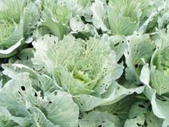
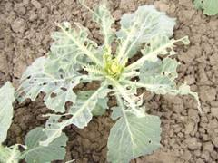
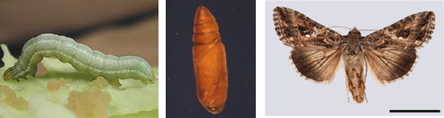

| Home |
| CRUCIFEROUS VEGETABLES |
MAJOR PESTS |
| 1. Diamond back moth |
| 2. Leaf webber |
| 3. Cabbage semilooper |
| 4. Cabbage butterfly |
| 5. Cabbage borer |
| 6. Mustard sawfly |
| 7. Cabbage aphid |
| 8. Cabbage flea beetle |
| Questions |
| Download Notes |
CRUCIFEROUS VEGETABLES :: MAJOR :: CABBAGE SEMILOOPER
3. Cabbage semilooper: Tircihoplusia ni (Noctuidae: Lepidoptera)
Distribution and status: USA, India and Sri Lanka
Host range: Cabbage, tomato and other cruciferous vegetables.
Damage symptoms
Caterpillars start scrapping and feeding on the leaves initially and later defoliate entire plant leaving midribs and main veins. More damage is evidenced in nurseries than in main field.
|  |  |
Bionomics
E ggs are greenish white, spherical and sculptured and are laid singly on ventral surface of leaves. Adults are stout moths. Head and thorax grey in colour, while abdomen is white with basal tuft of hairs. Pupation takes place in thintransparent cocoons on ventral surface of leaves. Life cycle occupies on month.
|  |
Management
- Hand pick and destroy caterpillars
- Use light trap to attract and kill adults
- Spray quinolphos 0.5% or endosulfan 0.1 % or malathion 0.1 %